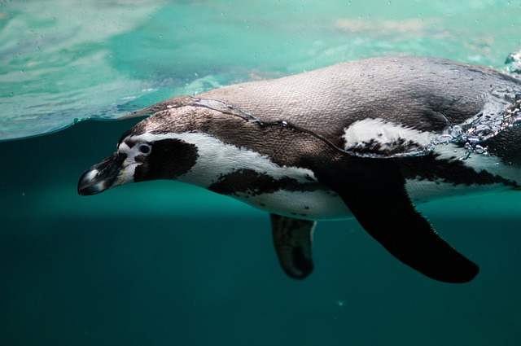
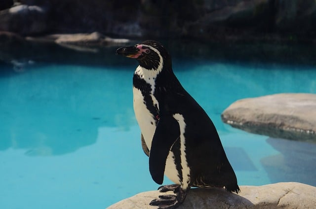

Penguin habitats include oceans and coasts. They generally live on islands and remote continental regions with few land predators, where their inability to fly is not detrimental to their survival. They are adapted to living at sea, and some species can spend months at sea.
Click on this text!
The average life expectancy of penguins is likely around 15 to 20 years, with some individuals live considerably longer. There is a high mortality rate among the young. For example, the emperor chicks may experience a 90% mortality within the first year of life and about 50% of king penguin chicks will not survive due to winter starvation.
To know me more check this website:
Then listen to my voice :)
Penguins eat krill, squids, and fishes. Their diet varies slightly on the species of penguins, which have slightly different food preferences. This reduces competition among species.
Click on this text!